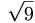

De: La Frikipedia, la enciclopedia extremadamente seria.
De: La Frikipedia, la enciclopedia extremadamente seria. De: La Frikipedia, la enciclopedia extremadamente seria.
| De la serie programar es fácil: | |||
| Hasecorp Office | |||
| |||
| Desarrollador | Hasecorp | ||
| Licencia | Carera | ||
| Botones | 2347297 | ||
| Última versión | 2083 | ||
| ¿Funciona? | No mucho | ||
| ¿Tiene Virus? | cientos de miles | ||
«¿Por qué no te callas?»
~ Juan Carlos I mandando callar a clipo, el ayudante de Office
Hasecorp Office es un a potente herramienta desarrollada íntegramente por Hasecorp para subsanar las carencias que traía el Hasefroch 95 de dominar el mundo. Como tapadera, se desarrolló bajo una amigable interfaz ofimática, el sustituto perfecto de la máquina de escribir. Entre sus principales funciones de cara a Hasefroch están la de espiar a sus usuarios, chupar memoria RAM como una puta barata (combinado con Panda Antivirus el ordenador explota) y recopilar datos sin importancia tales como números de tarjetas de crédito, cuentas bancarias y similares.
Como mensaje subliminal de su intento de dominar el mundo, no solo se conformaron con hacer un logotipo con cierta similitud con una esbástica, sino que incluso el Hasecorp Office 2003 incluye esvásticas en la fuente la fuente Bookshelf Symbol 7.
Güor es la más popular herramienta que trae el paquete ofimático. Es la pokemonización del Bloc de notas permitiendo cambiar la fuente. Para ello plagiaron íntegramente el Word Perfect y le añadieron las funciones de fishing oportunas. De ahí que el Word Perfect ocupará 5 megas y el Güor ocupe 50 megas en sus versiones más livianas.
Gracias a su gran cantidad de código subyacente, el ordenador en el que se esté ejecutando, da igual que sea un Quad Core o un 386, que tengas 16 megas de RAM o 4 Gibas de Ram, ya que el uso de recursos de la aplicación será de 99% en el mejor de los casos. Si necesitas hacer una impresión, puedes darte por jodido.
Los archivos creados con Güor almacenan todos los números de tus tarjetas de crédito y alguna foto de tu último viaje a Torrevieja, siempre de forma oculta. De ahí que un documento de Güor con una sola palabra ocupe 50 kb.
Para una versión ampliada de esta aplicación, consultar el artículo Güor
Para los amantes de las gráficas, funciones logarítmicas neperianas y cuadrículas. La hoja de cálculo es una maravilla ya que funciona inversamente a los conocimientos ofimáticos del usuario, cuanto más sepas de hojas de cálculo y sus fórmulas, peor funcionará el sistema. Tiene también gran facilidad para generar gráficos inútiles. Si estás buscando hacer un gráfico concreto, no te molestes, ya que Ezel tratará de complicarte la existencia agregándote ejes de la nada. Suelen ser más fáciles hacerlos con el Paint.
Las fórmulas que funcionan sin ningún problema son aquellas que se podrían hacer de cabeza, del tipo 3+4, 7x3, o incluso , pero ni se te ocurra pedir un 56x13, ya que dará un error.
El Pagüer Poin es una de las herramientas de ocio más potentes que ha sacado Hasecorp, mucho más incluso que su X-box. Gracias a su potencia a la hora de crear presentaciones, se reciben al día miles de e-milios con todo tipo de presentaciones, desde las típicas de Grasias por se mi amigo (que suelen venir con asuntos con otros vocablos sudamericanos del tipo, mira que lindo o espero que me lo regreses), hasta las que te puedes estar partiendo la polla toda la mañana, pasando por aquellas molestas cadenas que algún subnormal tuvo los huevos cuadraos de sacarla de un e-mail de texto plano y plasmarla en un bonito archivo pagüer poin lleno de colorines.
La estadística dice, y gracias a que Aspaña es un país de ingenieros (cinco miran y uno trabaja), el Pagüer Poin es usado en la mayoría de los casos como visor y no como herramienta para crear presentaciones. Si recibes un Pagüer Poin, ten por seguro que la persona que te lo envió no lo hizo, y mucho menos si en el asunto hay un Fw:, que ni siquiera se molestan en borrar.
Más allá de esas bonitas presentaciones, hay gente (cada vez menos) que lo usa para hacer organigramas, para que sus subordinados no olviden quien es el que parte el bacalao y quien puede cepillarse a la secretaria sin ser despedido.
Potentísima base de datos si no conoces ninguna otra. Cuando más necesitas que una aplicación te chupe recursos para que funcione a pleno rendimiento, Akces se relentiza más que el coche de Alonso tras pasar por el box de McLaren.
Hasecorp en un intento de crear su propia base de datos, copió la estructura y las sentencias de SQL. La empresa de Bill Gates como sabe que el trabajo de informático es muy aburrido pues metió para diversión de este la automatización de fechas, haciendo que los días se cambien por meses y los meses por días. Con esto te garantizas diversión durante los siguientes 3 meses de desarrollo cambiando manualmente los registros invertidos.
No contentos con esto, decidieron agregar más diversión si cabe, creando registros fantasma (registros borrados que misteriosamente siguen estando en la base de datos), registros que no se pueden borrar, consultas que no devuelven nada pese a estar los datos en las tablas, y muchas otras que pueden hacer que una noche se convierta en día mientras corriges errores.
Es recomendable, cada vez que se realiza una consulta, una inserción, o simplemente al hacer click en Acerca de... utilizar la utilidad de compactar y reparar.
La herramienta de correo litrónico más potente de Hasecorp y por supuesto la peor que puedes tener. La traducción a aspañol de la aplicación significa fuera suerte, y con toda la razón ya que la suerte para que un mensaje sea enviado con éxito tiene que ser inmensa.
Su función única e ineludible por parte del usuario es la de actualizar todos los virus del sistema a diario y proveer de información sensible (contraseñas, cuentas bancarias...) a los programas de spyware previamente instalados por su subrutina Internet Exploder, siendo por tanto una parte indispensable del sistema.
Para no causar molestias borrándote correos que no son spam, sencillamente deja pasar todo el correo. Todo un detalle por parte de Hasecorp, ya que sabe que necesitas viagra (recuerda que te espía gracias al güor), un rolex de imitación, licencias para Hasefroch o un estiramiento de pene.
Autor(es):